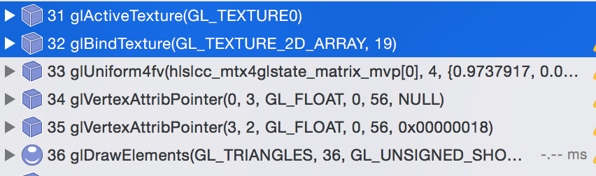

Texture2DArray
2016-8-1
根据 ArrayTexture 这个名字就能够知道它是多张纹理组成的数组。一般情况下我们将一个纹理对象绑定到一个纹理单元上，如果着色器中需要使用多张纹理，就需要将这些纹理分别绑定到不同的纹理单元上。类似下面这样：
// active texture unit0, bind texture0
glActiveTexture(GL_TEXTURE0);
glBindTexture(GL_TEXTURE_2D, texture0);
// active texture unit1, bind texture1
glActiveTexture(GL_TEXTURE1);
glBindTexture(GL_TEXTURE_2D, texture1);
// active texture unit2, bind texture2
glActiveTexture(GL_TEXTURE2);
glBindTexture(GL_TEXTURE_2D, texture2);
每一次 active 和 bind 对 CPU 来说都是一次 overhead（state change）。当大量出现类似的情况时，消耗就不容小视了。
为了减少 texture state change，一个常用的方法是将多张纹理合并成一张大的 Atlas（Figure 1）。但是这样做同样带来了一些副作用，首先对于美术制作上就带来了不便，由于原本的单张纹理被合并到了 Atlas 上，导致模型上的 uv 需要进行对应的调整。其次，合并后的大纹理（Atlas）会占用更多的位宽，降低了纹理采样的效率。所以这时候 ArrayTexture 出场了。
Figure 1

GPU 可以将多张符合一定条件（纹理的大小格式必须完全一致）的纹理视为同一个对象（纹理数组），绑定到一个纹理单元上，减少了多次 texture state change 的 overhead。当然没有一种方法是完美的，基于这样的限制条件，同样会产生新的不便，这就需要在开发的时候去权衡和不断测试了。
下面的截图是四张纹理分别绑定和使用纹理数组进行绑定的消耗对比。

